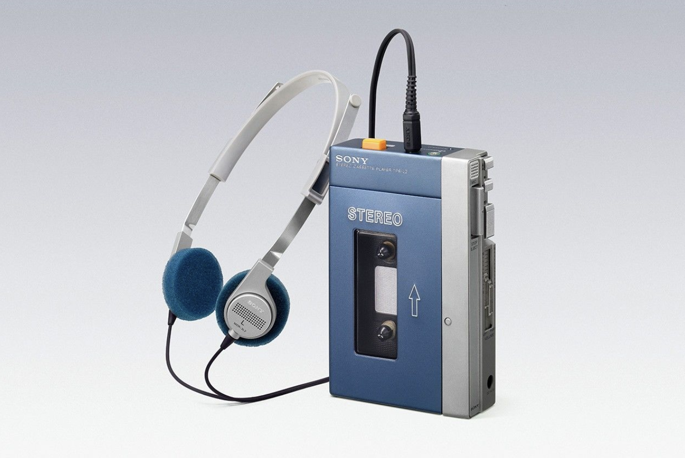

Microsoft Xbox (2001)
From PC brute force to living-room console: anthropometric crises, hard-drive gambles, and the Controller S pivot.
Read case study →Guiding questionHow do designers approach problem-solving?
Overview and teacher commentary will appear here.
The design process is a five-phase iterative framework (Empathise, Define, Ideate and Model, Design a Solution, Present a Solution) that structures how designers move from a user problem to a refined, validated solution. These notes address each learning objective in turn and supplement your classroom materials and textbook; they are not a substitute for them.
Students must be able toOutline each stage of the design process (empathize; defining the project; ideation and modelling; designing a solution; presenting a solution).
The design process is an iterative, human-centred framework comprising five phases:
The process is iterative, not linear. Designers regularly cycle back to earlier phases as new information emerges: re-empathising after a prototype test reveals an unexpected user need, or redefining specifications when a material constraint changes the problem.
设计过程是一个迭代的、以人为本的框架，包含五个阶段：
这个过程是迭代的，而非线性的。随着新信息的出现，设计师会循环回到较早的阶段——在原型测试揭示意外的用户需求后重新共情，或在材料约束改变问题时重新定义规格。
From PC brute force to living-room console: anthropometric crises, hard-drive gambles, and the Controller S pivot.
Read case study →Project Purple: killing the stylus, inventing multi-touch, and the last-minute Gorilla Glass pivot.
Read case study →
Removing features to create a revolution: the hacked Pressman prototype and the birth of private audio.
Read case study →Students must be able toDistinguish between primary and secondary sources, qualitative and quantitative data and how they are used to identify design opportunities, develop an understanding of users and generate ideas for solutions to problems.
Research is not a one-off activity at the start of a project; it runs throughout every phase of the design process. Designers collect data to identify opportunities, understand users, generate ideas and validate solutions. Two fundamental distinctions structure all design research:
Primary vs Secondary research:
Qualitative vs Quantitative data:
Effective design research combines both types: qualitative data explains the problem; quantitative data measures progress toward solving it.
研究不是项目开始时的一次性活动——它贯穿设计过程的每个阶段。设计师收集数据以识别机会、了解用户、产生想法并验证解决方案。两个基本区分构成所有设计研究的框架：
一手研究与二手研究：
定性数据与定量数据：
有效的设计研究将两种类型结合：定性数据解释问题；定量数据衡量解决进展。
Students must be able toApply primary research methods to gather first-hand data (user observations, interviews, surveys, questionnaires, focus groups, material testing and product analysis) and analyse the data to establish user requirements and design specifications, develop a persona and suggest further developments of a solution.
Primary research produces first-hand data that is specific to your design context and your users. Common methods include:
Primary data is authentic and directly relevant to your project, but it requires time, access to users and ethical consideration, particularly when working with minors or vulnerable groups.
一手研究能产生针对您的设计情境和用户的第一手数据。常用方法包括：
一手数据真实且与项目直接相关，但需要时间、访问用户的渠道和伦理考量——尤其是在与未成年人或弱势群体合作时。
Students must be able toAnalyse secondary data sources (internet-based research, government data and statistics research, university research and literature search) to establish user requirements and design specifications, develop a persona and suggest further developments for a solution.
Secondary research uses data collected and published by others. Designers turn to secondary sources to build background knowledge, validate primary findings, and access data at scales impossible to collect directly.
Common secondary sources in design include:
The key limitation of secondary research is relevance: data collected for a different purpose, population or context may not match your design situation. Secondary research should support (not replace) primary research.
二手研究使用他人收集和发布的数据。设计师转向二手资料的目的是积累背景知识、验证一手研究结论，以及获取无法直接收集的规模数据。
设计中常见的二手资料来源包括：
二手研究的主要局限在于相关性：为不同目的、人群或情境收集的数据可能与您的设计情况不匹配。二手研究应辅助——而非取代——一手研究。
Students must be able toIdentify issues, problems and challenges using user-centred research methods and techniques, and identify user needs for specific user groups to understand their experience, motivations and interactions with products and environments.
A persona is a research-based fictional character that represents a specific group of end-users. Unlike marketing demographics (age, gender, income), an effective persona captures the full human picture: goals and motivations, frustrations and pain points, behaviours and daily routines, and the context in which they interact with products.
Personas serve two critical functions: they focus the design team on real human needs rather than assumed needs, and they prevent "design by committee" where everyone designs for themselves.
The demographics trap: The chapter warns against relying on demographics alone. Consider two male Europeans born in the late 19th century (both leading professionals and public figures): Albert Einstein and Charlie Chaplin. Their demographic profiles are identical, yet their product needs, preferences and lifestyles differ enormously. Similarly, Marie Curie and Florence Nightingale share a female professional demographic, yet represent vastly different users.
Demographics tell you who someone is categorically, not what they need or how they behave. Effective personas require psychographic data: values, attitudes, lifestyle and context of use.
角色模型是一个基于研究的虚构角色，代表特定的最终用户群体。与营销人口统计（年龄、性别、收入）不同，有效的角色模型捕捉完整的人物形象：目标和动机、挫折和痛点、行为和日常习惯，以及他们与产品互动的情境。
角色模型有两个关键功能：让设计团队专注于真实的人的需求而非假设的需求，并防止"委员会式设计"——即每个人都为自己设计。
人口统计陷阱：章节警告不要单独依赖人口统计数据。考虑两位19世纪末出生的欧洲男性——均为各自领域的领导专业人士和公众人物：阿尔伯特·爱因斯坦和查理·卓别林。他们的人口统计资料完全相同，但产品需求、偏好和生活方式却大相径庭。同样，居里夫人和弗洛伦斯·南丁格尔拥有相同的女性职业人口统计，却代表着截然不同的用户群体。
人口统计数据告诉您某人在分类上是谁——而非他们需要什么或他们如何行为。有效的角色模型需要心理图像数据：价值观、态度、生活方式和使用情境。
Psychographic data describes a person's values, attitudes, interests, lifestyle and motivations, the internal factors that shape how they think and behave. It sits alongside demographic data (age, gender, income, location) but answers a different question: demographics describe who someone is categorically, while psychographics describe why they make the choices they make.
Two users with identical demographics can have opposite psychographics. Two retired adults of the same age, income and location might differ completely: one is risk-averse and values routine, the other is adventurous and seeks novelty. A persona built only from demographic data would treat them as the same user; psychographic data is what makes a persona specific enough to design for.
Students must be able toMap a user's journey using a storyboard and identify pain points within that journey that provide design opportunities.
User observation involves watching users perform real tasks in their actual environment: a technique that reveals behaviours, workarounds and frustrations that users themselves may not consciously recognise or articulate in an interview.
A storyboard is a visual tool used to map a user's journey through a product experience or task sequence. Like a comic strip, it breaks the journey into discrete frames: each showing the user, their action, their environment and their emotional state at that moment. Storyboards make user journeys visible, shareable and open to critique within the design team.
Pain points are moments in the journey where the user experiences friction, frustration or failure. They are design opportunities: each pain point is a place where a better design could improve the experience. A storyboard is an effective tool for identifying and communicating pain points because it preserves the sequence and context of the problem, not just the problem itself.
用户观察涉及在用户实际环境中观察其执行真实任务——这种技术揭示了用户自己可能无法有意识地认识或在访谈中表达的行为、变通方法和挫折。
故事板是一种视觉工具，用于描绘用户在产品体验或任务序列中的旅程。像漫画一样，它将旅程分解为若干独立的画面——每个画面展示用户、其行动、所处环境以及彼时的情感状态。故事板使用户旅程在设计团队内可视化、可分享且可供批判性评估。
痛点是用户在旅程中遇到摩擦、挫折或失败的时刻。它们是设计机会：每个痛点都是更好的设计可以改善体验的地方。故事板是识别和传达痛点的有效工具，因为它保留了问题的顺序和情境，而不仅仅是问题本身。
Students must be able toAnalyse a range of products that either provides a solution to a problem or can inspire a solution to a problem.
Product analysis is a structured examination of an existing product to understand how it solves (or fails to solve) a problem. It is used during both the Empathise phase (understanding the current state of the world) and the Ideate phase (finding inspiration for new solutions).
A thorough product analysis examines:
Product analysis produces data that feeds directly into design specifications: what this product does well that must be matched, and where it fails that the new design must address.
产品分析是对现有产品的结构化检查，以了解它如何解决——或未能解决——某个问题。它在共情阶段（了解当前世界状态）和构思阶段（寻找新解决方案的灵感）都会使用。
全面的产品分析检查以下方面：
产品分析产生的数据直接用于设计规格：该产品哪些方面做得好需要匹配，以及哪些方面失败了新设计必须解决。
Students must be able toExplain the nature of a problem by writing a problem statement that clearly defines their design intentions.
The first and most critical step in moving from Empathise to Define is writing a clear problem statement. A problem statement answers: who is experiencing what difficulty, in what context, and why does it matter?
A well-formed problem statement:
Design intention is the goal the solution must achieve, derived directly from the problem statement. Clear design intentions make subsequent decisions (about materials, features and form) much easier to justify: a feature either serves the design intention or it doesn't. Without a precise problem statement, every design decision becomes arbitrary.
从"共情"过渡到"定义"阶段的第一步，也是最关键的一步，是撰写清晰的问题陈述。问题陈述回答：谁在什么情境下遇到了什么困难，为什么这很重要？
一个完善的问题陈述：
设计意图是解决方案必须实现的目标，直接从问题陈述中得出。清晰的设计意图使后续的决策——关于材料、功能和形式——更容易证明是合理的：一个功能要么服务于设计意图，要么不服务。没有精确的问题陈述，每个设计决策都将变得随意。
Students must be able toConstruct design specifications based on primary and secondary research that communicate the essential and desirable success criteria of the redesigned product.
A design brief is the formal document produced at the end of the Define phase. It translates the problem statement into actionable direction and aligns all stakeholders (client, designers, engineers and manufacturers) around what the solution must achieve.
A design brief typically includes:
Specifications are divided into essential criteria (must be met; non-negotiable) and desirable criteria (would improve the product but are optional and can be traded against cost or time). Without clear specifications, it is impossible to evaluate whether any design iteration has succeeded.
设计简报是在"定义"阶段结束时产生的正式文件。它将问题陈述转化为可操作的方向，并使所有利益相关者——客户、设计师、工程师和制造商——对解决方案必须实现的目标达成共同理解。
设计简报通常包括：
规格分为基本标准（必须满足；不可妥协）和期望标准（会改善产品但属可选项，可以与成本或时间进行权衡）。没有清晰的规格，就无法评估任何设计迭代是否成功。
Students must be able toApply ideation techniques to develop a range of diverse and appropriate ideas that address a problem statement and respond to design specifications.
The Ideation phase asks designers to generate as many diverse, creative solutions as possible before evaluating any of them. Several structured tools help prevent mental blocks:
构思阶段要求设计师在评估任何方案之前尽可能多地生成多样化的创意解决方案。几种结构化工具有助于防止思维障碍：
Students must be able toCompare their ideas with the design specifications and user needs as they refine their solutions.
Iterative evaluation means systematically comparing each design idea against the design specifications and user needs, not once, but repeatedly as ideas evolve. At each stage, designers ask:
Design matrices (decision matrices) formalise this process: specifications are listed as rows, ideas as columns, and each cell receives a weighted score. The matrix makes trade-offs visible and defensible against stakeholder challenge.
Iterative evaluation drives targeted refinement: weak areas are identified with enough precision that the next iteration can address them specifically. This is far more efficient than building a complete prototype and discovering at that point that a fundamental specification has not been met.
迭代评估意味着系统地将每个设计想法与设计规格和用户需求进行比较——不是一次，而是随着想法的演变反复进行。在每个阶段，设计师会问：
设计矩阵（决策矩阵）将这一过程正式化：规格列为行，想法列为列，每个单元格得到加权分数。矩阵使权衡可见且可在面对利益相关者质疑时加以辩护。
迭代评估推动有针对性的改进：弱点被足够精确地识别，以便下一次迭代可以针对性地解决它们。这比构建一个完整的原型后才发现不满足基本规格要高效得多。
Students must be able toDemonstrate iterative development of a design using the model, test, refine cycle.
The model–test–refine cycle is the engine of the Design a Solution phase. Rather than developing a finished product in a single pass, designers move through repeated loops:
This maps onto the PDSA (Plan-Do-Study-Act) cycle from quality management: Plan what to test and how; Do by building and running the test; Study what the data shows; Act by implementing changes before the next cycle.
Stakeholder feedback (from clients, users and technical experts) is incorporated at every cycle. Each iteration reduces uncertainty. A product that has been through five test–refine cycles is far better aligned with real user needs than one developed in a single extended phase.
建模–测试–改进循环是"设计解决方案"阶段的引擎。设计师不是一次性开发完成品，而是通过反复循环推进：
这对应质量管理中的PDSA（计划-执行-研究-行动）循环：计划要测试的内容和方式；执行构建和运行测试；研究数据显示的内容；行动在下一个循环之前实施改进。
利益相关者反馈——来自客户、用户和技术专家——在每个循环中加以整合。每次迭代都降低不确定性。经过五个测试–改进循环的产品，比在单一漫长阶段开发的产品更符合真实用户需求。
Students must be able toCreate feasible models of an intended solution at appropriate levels of fidelity that generate performance data when tested with end-users.
A prototype is a physical or virtual model built to test a specific aspect of a design before committing to full production. Prototypes are categorised by fidelity: how closely they resemble the final product.
Low-fidelity (lo-fi) prototypes:
High-fidelity (hi-fi) prototypes:
The sequence is always lo-fi to hi-fi: only invest in expensive prototyping once a concept has survived lo-fi testing. Every prototype exists to generate test data that feeds the next iteration.
原型是在正式投入全面生产之前，为测试设计的某个具体方面而建造的物理或虚拟模型。原型按保真度分类——即它们与最终产品的相似程度。
低保真（lo-fi）原型：
高保真（hi-fi）原型：
顺序始终是从低保真到高保真：只有在概念通过低保真测试后，才投资昂贵的原型制作。每个原型的存在都是为了产生测试数据，以推动下一次迭代。
Students must be able toCreate detailed drawings of components and assembled products that communicate dimensions, scale and assembly details.
Technical drawings (also called engineering or working drawings) are the formal language of manufacturing: they convey exact dimensions, tolerances, materials, scale and assembly instructions to manufacturers anywhere in the world.
Key conventions include:
Without accurate technical drawings, the gap between a prototype and a manufactured product cannot be closed. Every dimension becomes a specification that manufacturing must achieve.
技术图纸（也称为工程图纸或工作图纸）是制造业的正式语言——它们向世界各地的制造商传达精确的尺寸、公差、材料、比例和装配说明。
主要惯例包括：
没有精确的技术图纸，原型与制造产品之间的差距无法缩小。图纸上的每个尺寸都成为制造必须实现的规格。
Students must be able toCreate virtual representations of a solution, highlighting key usability features, and explain how it meets the design specifications and achieves the design intentions as a proposed solution or as an improvement to an existing product.
The Present a Solution phase is the designer's opportunity to communicate the full value of their work to clients, stakeholders and users. An effective presentation goes beyond "here is what it looks like"; it tells the story of the design: the user problem, the research journey, the key design decisions, and the evidence that the solution meets its specifications.
Tools for presenting solutions include:
An effective presentation clearly states the user need being addressed, shows how key features directly respond to specific design specifications, and acknowledges limitations with a plan for future refinement. The goal is not to sell the design but to demonstrate that it is evidence-based and can withstand scrutiny.
呈现解决方案阶段是设计师向客户、利益相关者和用户传达其工作全部价值的机会。有效的呈现不仅仅是"这是它的外观"——它讲述了设计的故事：用户问题、研究旅程、关键设计决策以及解决方案满足规格的证据。
呈现解决方案的工具包括：
有效的呈现清晰地陈述所解决的用户需求，展示关键功能如何直接响应特定设计规格，并承认局限性，提出未来改进计划。目标不是推销设计，而是证明设计有证据支撑，能够经受审查。
Ten questions covering the five-phase design process, research methods, ideation tools and iterative development. Select one answer per question, then check all at once.
1. According to the chapter, what percentage of startups fail due to lack of market need?
2. Which of the following is an example of primary research?
3. The SCAMPER technique is used primarily during which phase of the design process?
4. A Likert scale questionnaire is designed to collect:
5. Which of the following best describes the purpose of a design brief?
6. In the Six Thinking Hats method, which hat is associated with feelings and emotions?
7. The PDSA cycle (Plan-Do-Study-Act) is an example of:
8. A morphological analysis (Zwicky box) helps designers to:
9. Which statement correctly distinguishes primary from secondary research?
10. Why does the chapter warn against relying on demographics alone when developing personas?
Explain the difference between primary research and secondary research in the context of product design. Give one example of each.
Primary research involves the collection of first-hand data directly from sources relevant to the design context. This data is original and has not been interpreted by anyone else. An example is designers gathering anthropometric measurements directly from a proposed user group: the data is specific to those users and that context.
Secondary research involves the collection of data provided by a third party, such as information from textbooks, academic journals, market reports or government databases. An example is referencing a national anthropometric database rather than measuring users directly. Primary research provides authentic, context-specific data but takes time and money. Secondary research is faster and cheaper but may not perfectly match the specific design context and can become outdated.
Describe three different creativity and ideation tools from the chapter. For each tool, explain how it helps designers generate innovative solutions.
1. SCAMPER: An acronym for Substitute, Combine, Adjust, Magnify/Minify, Put to other uses, Eliminate, Reverse/Reorder. This tool helps designers by providing a structured checklist of "thought triggers." For example, a designer might ask "What can I eliminate?" or "What happens if I reverse the order of operations?" This prevents designers from getting stuck and ensures they consider multiple angles systematically.
2. Six Thinking Hats (Edward De Bono): Each coloured hat represents a different thinking mode: White (facts), Red (emotions), Black (negative/critical), Yellow (positive/optimistic), Green (new ideas), Blue (big picture/management). This tool helps teams separate different types of thinking so they do not mix criticism with creativity. Using only the Green hat, the team generates ideas without negative judgment; switching to Black hat allows evaluation.
3. Morphological analysis (Zwicky box): A visual grid that organises design parameters as rows and possible solutions for each parameter as columns. The chapter illustrates this with a bread example: flour types, leavening methods, shapes, crust types and baking methods. Every intersection of a row and column represents a different combination, revealing novel solutions that emerge from mixing parameters in unexpected ways.
A design team has collected the following feedback from user interviews about a new kitchen faucet: "The handle is stiff," "I like the brushed nickel finish," "The spray button is hard to find," "It looks expensive," and "Installation took three hours." Categorise each piece of feedback as either qualitative or quantitative. Then explain why both types of data are necessary for effective product design.
Categorisation:
Why both types are necessary: Qualitative data tells designers the "why" behind user behaviour: it reveals emotions, frustrations, preferences and motivations. The qualitative feedback above tells the team that users value aesthetics but struggle to find the spray button and experience the handle as stiff. Without qualitative data, the team would not know why users are dissatisfied. Quantitative data provides measurable, comparable numbers. The three-hour installation time is an objective metric that can be benchmarked against competitors and used to set measurable improvement targets. Together, qualitative data identifies the problem and quantitative data measures progress toward solving it. Using only one type would leave the design incomplete.
Explain why the chapter warns that "relying on demographics alone" when developing personas is problematic. Use the examples of Albert Einstein and Charlie Chaplin in your answer.
The chapter warns that relying on demographics alone is problematic because people with identical demographic profiles can have profoundly different needs, tastes and behaviours. The chapter provides the example of a male demographic profile: European nationality, born in the late 19th century, leading professional in their field, public figure, cultural icon. Based on demographics alone, Albert Einstein (physicist) and Charlie Chaplin (actor and comedian) would be grouped together as the same "user." Yet their product preferences, lifestyles and needs would differ enormously: Einstein might prioritise quiet, functional workspaces while Chaplin would value expressive, theatrical environments.
Demographics tell you who users are categorically, but not what they need or how they behave. Effective personas require richer psychographic data: goals, motivations, frustrations, daily activities and context of use. Without this additional layer, a persona based on demographics alone risks designing for an average that no real person represents.
Analyse how the iterative nature of the design process (model–test–refine cycles) helps designers avoid the 42% startup failure rate due to lack of market need mentioned in the chapter. Refer to low-fidelity and high-fidelity prototyping in your answer.
The 42% failure rate due to lack of market need occurs when companies build products nobody wants, typically because they developed in isolation without testing assumptions against real users. The iterative design process directly prevents this by forcing designers to test assumptions repeatedly rather than investing in a complete product first.
Low-fidelity prototyping (cardboard, paper sketches, foam models) allows designers to test basic concepts within hours at negligible cost. If users say "I don't understand where the handle goes" or "This doesn't fit my context," the team has wasted almost nothing. They discard the cardboard and try a different configuration. This "fail fast, fail cheap" approach ensures bad ideas are eliminated before costly resources are committed.
High-fidelity prototyping (functional models resembling the final product) comes later, after the core concept has already survived multiple rounds of lo-fi testing. Hi-fi prototypes generate meaningful performance data (task completion rates, error rates, user satisfaction scores) that lo-fi testing cannot. If problems are found at this stage, they can still be addressed before mass production at manageable cost.
The iterative cycle (PDSA) ensures every round of feedback drives refinement, then another round of testing. Each iteration reduces the risk of building a product the market does not want. A concept that has survived five user-testing cycles with genuine feedback at each stage is fundamentally less likely to fail due to lack of market need than one developed without iteration.
Free article providing a clear overview of the five-phase design thinking process with real-world examples. Search: "Interaction Design Foundation design thinking five stages".
Three-minute animated video showing how to apply each letter of SCAMPER to real problems. Search: "MindTools SCAMPER technique YouTube".
Printable one-page summary of each hat's purpose and typical questions. Search: "Six Thinking Hats quick reference cheat sheet".
Free list of all 40 TRIZ principles with examples for students exploring systematic innovation. Search: "TRIZ 40 inventive principles triz40".
Short article explaining the research behind the statistic that 42% of startups fail due to lack of market need. Search: "CB Insights why startups fail top reasons".
Free search engine for academic papers. Teaches students how to conduct secondary research literature searches. Search: "Google Scholar" or navigate directly to scholar.google.com.
Practical guide with good and bad examples for students designing their own questionnaires. Search: "SurveyMonkey how to write Likert scale question".
Chinese-language reference covering the five-phase design process. Search: "百度百科 设计思维".
Nielsen Norman Group's four-minute video on creating effective, research-based personas. Search: "NNgroup persona development UCD YouTube".
Linking Questions